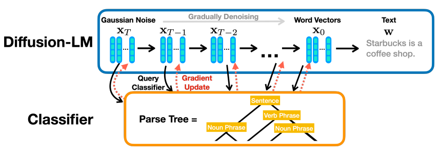
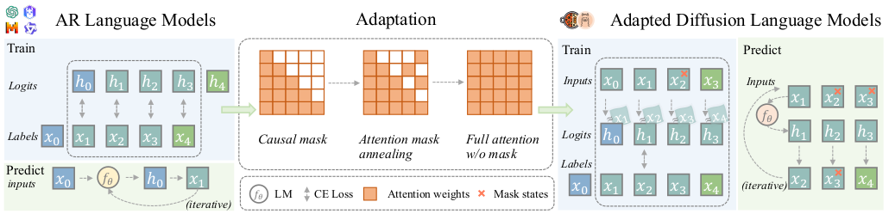
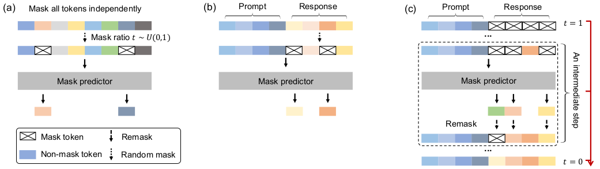
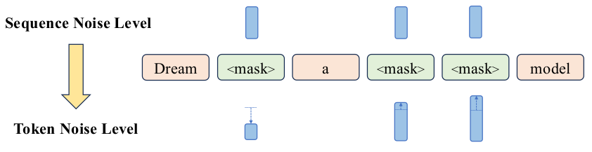
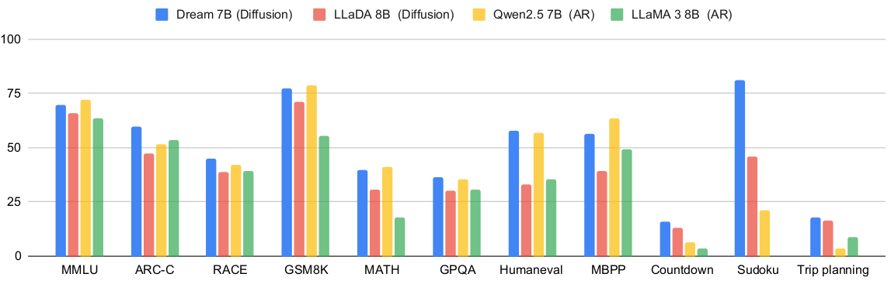
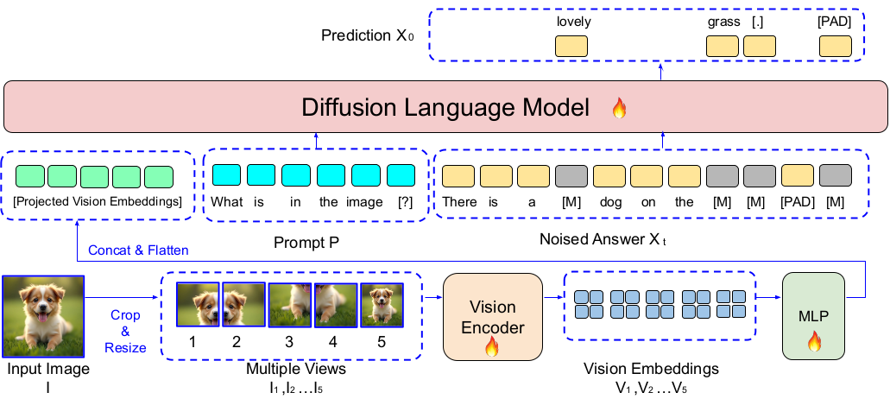

A New Paradigm for Text Generation
by Starc Institute, follow us at X (Twitter) @Starc_institute
A New Paradigm for Text Generation
by Starc Institute, follow us at X (Twitter) @Starc_institute
For decades, the story of language modeling has been written left-to-right, one token at a time. Autoregressive models—from n-grams to GPT-4—have dominated by predicting the next word given all previous words. But what if we could generate text differently? What if, instead of building sentences sequentially, we could refine entire sequences in parallel, seeing the whole picture at once?
This blog explores the evolution of diffusion language models, from their pioneering foundations in 2022 to state-of-the-art systems in 2025. These papers represent a paradigm shift from sequential, unidirectional generation to parallel, bidirectional refinement—challenging the autoregressive hegemony that has defined modern NLP.
The success of large language models (LLMs) like GPT-3, LLaMA, and Claude has been nothing short of revolutionary. These models generate text autoregressively—predicting one token at a time from left to right, with each prediction conditioned on all previous tokens. Mathematically, they model the probability:
$$p_{\theta}(x) = p_{\theta}(x_1) \prod_{i=2}^{N} p_{\theta}(x_i \mid x_{1:i-1})$$
This left-to-right decomposition has been the foundation of virtually all modern LLMs.
But this paradigm, despite its empirical success, comes with fundamental limitations:
Is the autoregressive paradigm truly the only path to language modeling capabilities? Or is it simply the first successful approach we found, with fundamental architectural limitations we've learned to work around?
While autoregressive models dominated text, a different paradigm was achieving remarkable success in computer vision. Diffusion models—which generate images by iteratively denoising random noise—produced stunning results with DALL-E 2, Stable Diffusion, and Midjourney. The key insight: instead of generating pixels sequentially, diffusion models refine the entire image in parallel through multiple denoising steps.
Diffusion models work through two processes:
This bidirectional view of generation enables global planning and iterative refinement—capabilities difficult to achieve with left-to-right generation.
But adapting diffusion to text wasn't straightforward. Text is inherently discrete—individual tokens from a fixed vocabulary—while diffusion was designed for continuous domains. The breakthrough came with discrete diffusion models and the masked diffusion framework.
Instead of adding Gaussian noise, discrete diffusion for text uses a masking process: gradually replace tokens with special [MASK] tokens until the entire sequence is masked. The model then learns to predict the original tokens given the partially masked sequence.
The training objective becomes a weighted cross-entropy loss:
$$\mathcal{L}(\theta) = \mathbb{E}_{x_0,t,x_t} \left[ w(t) \sum_{n=1}^{N} \mathbb{1}[x_t^n = \text{MASK}] \log p_{\theta}(x_0^n \mid x_t) \right]$$
Where \(w(t)\) weights different noise levels, typically emphasizing cleaner sequences (smaller \(t\)) to improve sample quality.
 Figure 1: Forward masking process and reverse denoising in discrete diffusion
Title: Diffusion-LM Improves Controllable Text Generation
Authors: Li et al., 2022
Link: arXiv:2205.14217
The seminal work by Li et al. introduced Diffusion-LM, demonstrating that continuous diffusion could work for text generation—not by operating on discrete tokens directly, but by diffusing in the space of word embeddings. This required several innovations:
But the real breakthrough was in controllable generation. Because diffusion operates on continuous latent variables, gradient-based control becomes natural:
At each denoising step, update the latent variables to maximize both fluency (the diffusion model) and control (a classifier):
$$\nabla_{x_{t-1}} \log p(x_{t-1} \mid x_t, c) = \nabla_{x_{t-1}} \log p(x_{t-1} \mid x_t) + \nabla_{x_{t-1}} \log p(c \mid x_{t-1})$$
This enables complex controls like syntactic structure, semantic content, and even composing multiple constraints—something extremely difficult for autoregressive models.
Diffusion-LM showed impressive results on fine-grained control tasks (syntax trees, semantic constraints), nearly doubling the success rate of plug-and-play autoregressive methods like PPLM. But it was trained only on small datasets and remained far from the scale of modern LLMs.
The next challenge was clear: could diffusion models scale to billions of parameters and trillions of tokens, matching the capabilities of autoregressive LLMs? Three parallel efforts in 2024-2025 tackled this from different angles.
Title: Scaling Diffusion Language Models via Adaptation from Autoregressive Models
Authors: Gong et al., 2024
Link: arXiv:2410.17891
Rather than training from scratch, Gong et al. proposed a clever shortcut: adapt existing autoregressive models into diffusion models. The key insight was recognizing similarities between AR and diffusion objectives:
Both AR and masked diffusion use cross-entropy losses on token predictions. The main differences:
| Aspect | Autoregressive | Masked Diffusion |
|---|---|---|
| Context | Unidirectional (causal masking) | Bidirectional (full attention) |
| Input | Clean tokens | Partially masked tokens |
| Loss Weight | Uniform (1.0) | Time-dependent \(w(t)\) |
DiffuLLaMA converts AR models through three key techniques:
By starting from pretrained AR models (LLaMA 2), DiffuLLaMA reaches 7B parameters with less than 200B tokens of training—orders of magnitude less than training from scratch.
 Figure 2: DiffuLLaMA adaptation process from AR to diffusion
Title: Large Language Diffusion Models
Authors: Nie et al., 2025
Link: arXiv:2501.04625
Taking a different approach, Nie et al. trained diffusion models from scratch at scale. Their key innovations:
Traditional masked diffusion wastes data: when 30% of tokens are masked, the other 70% aren't used for training. LLaDA introduces complementary masking:
Standard diffusion generates entire sequences from scratch. Prefix-DLM enables conditional generation:
LLaDA trains on 2.3 trillion tokens (comparable to modern AR LLMs) and reaches:
 Figure 3: LLaDA complementary masking and Prefix-DLM architecture
Title: Dream 7B: Diffusion Large Language Models
Authors: Ye et al., 2025
Link: arXiv:2501.14571
The most recent breakthrough, Dream-7B, achieves state-of-the-art diffusion LLM performance through a single key innovation: Context-Adaptive token-level noise Rescheduling with Time weighting (CART).
Traditional masked diffusion applies uniform noise schedules. CART adapts noise per token based on:
By adapting noise per token, CART:
 Figure 4: CART mechanism showing adaptive token-level noise rescheduling
Dream-7B achieves:
 Figure 5: Dream-7B performance comparison with AR baselines
Title: LaViDa: A Large Diffusion Language Model for Multimodal Understanding
Authors: Li et al., 2025
Link: arXiv:2501.15309
While most work focused on text-only generation, LaViDa extends diffusion to vision-language tasks. The key challenge: how to efficiently incorporate visual information into the diffusion process?
Processing images through vision encoders at every diffusion step is prohibitively expensive. LaViDa introduces vision caching:
On multimodal benchmarks:
 Figure 6: LaViDa architecture and performance on multimodal tasks
Title: DiffuCoder: Understanding and Improving Masked Diffusion Models for Code Generation
Authors: Gong et al., 2025
Link: arXiv:2501.13528
Code generation poses unique challenges for diffusion models: strict syntax requirements, long-range dependencies, and the need for executable correctness. DiffuCoder addresses these through Coupled Group Relative Policy Optimization (Coupled-GRPO).
Standard RLHF for code uses execution correctness as reward. DiffuCoder adds coupling between:
With only 21K code samples and Coupled-GRPO training, DiffuCoder achieves:
Diffusion-LM establishes the core paradigm:
DiffuLLaMA demonstrates efficient scaling:
Multiple breakthroughs in parallel:
In just three years, diffusion language models evolved from small-scale experiments to billion-parameter systems that:
Unlike AR models that only see left context, diffusion models access full bidirectional context at every step. This enables:
AR models must generate every token sequentially. Diffusion models can:
Gradient-based control in continuous latent space enables:
Dream-7B achieves +15% on constrained generation vs. AR models.
Diffusion naturally implements iterative refinement:
This aligns well with human writing processes and agentic reasoning.
The elephant in the room: diffusion models require 10-256 denoising steps vs. AR's single forward pass. Even with optimizations:
Open question: Can we achieve single-step diffusion without sacrificing quality?
While models like LLaDA match AR training costs, questions remain:
AR models benefit from mature RLHF/DPO/PPO techniques. Diffusion models need diffusion-native approaches:
AR models have well-studied scaling laws (Chinchilla, etc.). For diffusion:
The rise of diffusion language models represents more than just a new technical approach—it challenges fundamental assumptions about how language models should work.
For years, we've assumed that LLM capabilities—in-context learning, instruction following, emergent reasoning—were intrinsically linked to autoregressive architecture. The success of diffusion models proves otherwise. These capabilities arise from:
Not from the autoregressive formulation itself. This opens exciting possibilities for exploring alternative generation paradigms.
Moreover, diffusion models suggest different paths for future LLM development:
The journey from Diffusion-LM's pioneering work in 2022 to Dream-7B's state-of-the-art results in 2025 tells a remarkable story of rapid progress. In just three years, diffusion language models have evolved from small-scale experiments to competitive alternatives to autoregressive LLMs at billion-parameter scales.
Are diffusion models ready to replace autoregressive LLMs? Not yet. AR models still dominate in:
But diffusion models have proven they belong in the conversation. They offer unique advantages—bidirectional reasoning, controllability, flexible inference, iterative refinement—that make them compelling for specific applications and push the boundaries of what's possible in language generation.
The future likely isn't "diffusion vs. autoregressive" but rather a rich ecosystem of approaches, each excelling at different tasks:
What's certain is that the autoregressive hegemony has been challenged, and language modeling has never been more exciting.
This technical blog synthesizes research papers on diffusion language models, published in 2022-2025. The blog is published by Starc Institute. For latest research discussions, follow our X (Twitter) at @Starc_institute
All references, mathematical formulations, and technical details are drawn directly from the cited papers. For complete experimental details and additional results, please refer to the original papers.
Starc Institute
Last updated: November 2025